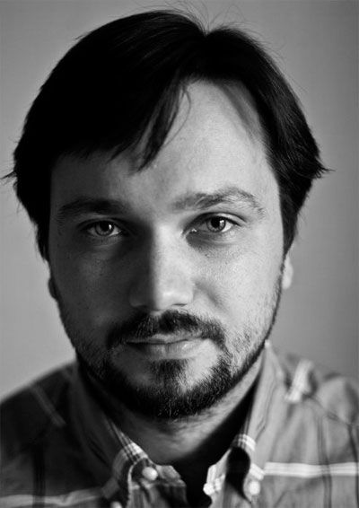

{% include JB/setup %}
{% raw %}
<div>

<span id="id10"><div class="title1">
<p class="p">Об авторе</p>
</div><div class="image">

</div><p class="p1"><strong class="calibre">Николай Кононов</strong> – журналист, главный редактор ежедневного издания о предпринимательстве Hopes&amp;Fears (hopesandfears.com). Окончил МГУ, работал репортером в газетах «Известия» и «Столичная вечерняя». Писал о бизнесменах разного масштаба – от деревенских подвижников до миллиардеров – сначала в журнале «Эксперт», а затем на протяжении семи лет в российском издании Forbes. Автор книги «Бог без машины: Истории 20 сумасшедших, сделавших в России бизнес с нуля».</p></span>
</div>

{% endraw %}

